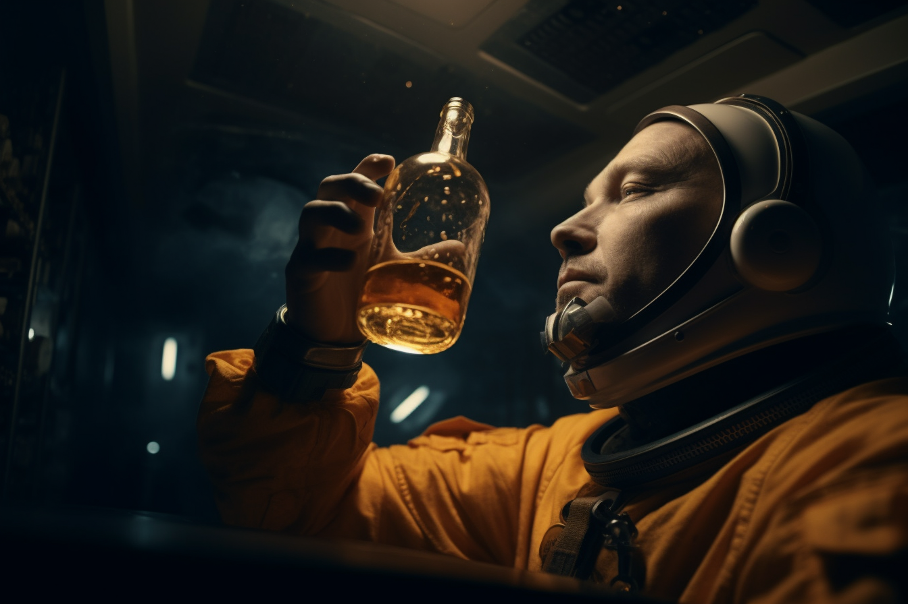

One Giant Sip for Mankind: How a Ukrainian Astronaut Smuggled a Bottle of Whiskey Aboard SpaceX's Starship
Intergalactic Intoxication: The Hilarious Tale of Cosmic Contraband and the Astronaut with a Thirst for Adventure
By |
In the annals of space exploration, there have been many tales of daring feats and unbelievable acts of heroism. But few can compare to the story of Yuri Kovalenko, a Ukrainian astronaut with a penchant for whiskey and a healthy disregard for the rules, who managed to smuggle a bottle of his favorite spirit aboard SpaceX's Starship.
The caper began when Yuri, a seasoned astronaut with multiple space missions under his belt, was selected to join an elite crew for an important mission aboard the SpaceX Starship. As he prepared for the journey, Yuri was struck by a sudden realization: if he was going to be cooped up in a spacecraft for months on end, he would need something to help pass the time – and what better way to do that than with a bottle of his beloved Irish whiskey?
With the launch date fast approaching, Yuri set about devising a plan to sneak his contraband aboard the Starship. Drawing on his years of experience as a spacefarer, he knew that every item brought on board had to be carefully accounted for and rigorously inspected. But Yuri was not one to be deterred by such trivial concerns.
His first attempt involved hiding the bottle inside a hollowed-out book titled "The Comprehensive Guide to Space Travel." Alas, his ruse was foiled when a particularly diligent SpaceX technician noticed that the book seemed suspiciously heavy. Undeterred, Yuri returned to the drawing board and came up with an even more audacious plan: to disguise the bottle as a high-tech piece of equipment.
With the help of his engineer cousin, Yuri crafted a cunning device that looked like a state-of-the-art communications satellite, complete with blinking lights and an array of antennas. Inside, however, was a compartment just large enough to house a bottle of his favorite whiskey.
On the day of the launch, Yuri strode confidently into the spacecraft, his "satellite" in tow. As the Starship rocketed into the cosmos, he couldn't help but smile to himself, knowing that he had pulled off the ultimate intergalactic heist.
The whiskey remained safely stowed away until Yuri deemed it time to unveil his secret stash. One fateful evening, as the crew gathered to celebrate a successful spacewalk, Yuri revealed his hidden treasure to the astonishment of his fellow astronauts. With a wink and a grin, he raised his glass in a toast to "the spirit of adventure," and the crew happily joined in, sipping the contraband whiskey as they floated weightlessly above the Earth.
Yuri's daring escapade has since become the stuff of legend, earning him a place in the annals of spacefaring lore. As for the whiskey, it is said to have taken on a celestial quality after its journey through the cosmos, forever imbued with the essence of the stars.
In the end, Yuri Kovalenko's hilarious feat serves as a reminder that, even in the cold vacuum of space, there is always room for a little warmth and camaraderie – especially when it comes in the form of a bottle of smuggled whiskey. Cheers to that!
Disclaimer: This is a fictional news article and is intended for entertainment purposes only.
None of the events or characters depicted here are real or based on any factual sources.